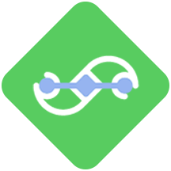
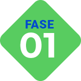
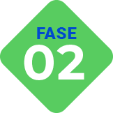

A Maratona Tech é uma jornada de aprendizagem por meio de desafios de lógica e pensamento computacional para despertar o interesse por tecnologia e a cultura do protagonismo dos jovens brasileiros.
Ela acontece em duas fases: a primeira em maio na qual os professores serão formados e receberão os planos de aulas prontos para aplicar com os alunos, trabalhando sobre as profissões do futuro e uma gincana de pensamento computacional desplugado. Já a segunda fase será uma formação remota diretamente para os alunos em três módulos: projeto de vida e tecnologia; lógica e pensamento em blocos e criação de histórias digitais no Scratch.
Para participar basta que um responsável (professor(a), coordenador(a), inscreva gratuitamente sua escola que automaticamente todos os alunos elegíveis estarão inscritos.
Você não vai ficar
de fora dessa, né?
Importante:
Quem se inscreve é a pessoa representante da escola!
As escolas precisarão disponibilizar acesso a computadores e internet
aos estudantes!
Seu perfil atende aos critérios acima?
Entenda as etapas da Maratona Tech.
Até o dia 15/05 Um(a) professor(a) responsável inscreve a escola.
09/05 a 30/06 Todos os alunos inscritos participam e competem entre si. Os estudantes destaques de cada escola seguem para a fase 2.
13/08 a 30/09 Os estudantes realizam uma jornada de aprendizagem, totalmente remota, com a entrega de um projeto final.
27/10 Cerimônia de premiação para estudantes e professores destaques.
Inscrições encerradas
No edital da Maratona Tech você irá encontrar todas as informações sobre a estrutura da competição e a jornada de participação da sua escola. Lembrando que o principal objetivo é estimular o pensamento computacional e o senso de protagonismo entre estudantes do ensino médio. Sua escola não pode ficar de fora! Preencha o formulário ao lado para baixá-lo.
“Acreditamos que para um jovem ser empoderado, ele precisa ter acesso a uma educação de qualidade, repertório e acreditar em si mesmo. Acompanhamos de perto o trabalho desenvolvido pela Cactus e temos certeza que o projeto terá grande impacto na vida dos estudantes.” Barbara Pitombeira - Arco Instituto
“Despertar os jovens do Brasil para a possibilidade de trabalhar com tecnologia é o primeiro passo para mudar a vida de milhões de famílias nas próximas duas décadas. Todo esforço nesse sentido será recompensado em muitas vezes.” Guilherme Rodrigues - Movimento Tech
“As oportunidades no mundo da tecnologia são infinitas. É nosso grande desafio sensibilizar os jovens para essas possibilidades. A Maratona Tech ocupa este lugar crucial de aproximação e encantamento dos jovens.” Lucas Giannini - Fundação Behring
“Quando a gente pensa em tecnologia, vem logo a palavra futuro à cabeça. Só que pouca gente pensa nas pessoas. Queremos que todos tenham conhecimento em tecnologia para conseguirem melhores oportunidades. Isso começa nas escolas. É assim que vamos dar novo sentido à velha promessa de viver em um país do futuro.” Gustavo Vitti - iFood
Associação Cactus Somos uma ONG que busca, através da educação e da criação de uma cultura de protagonismo, transformar a vida de todos que têm oportunidade de viver uma experiência Cactus. E temos um grande sonho: estar presente em todo o Brasil, como uma iniciativa que garanta educação de qualidade aos jovens, gerando equidade no sistema de ensino público.
Movimento Tech Um Movimento que reúne pessoas comprometidas com um futuro poderoso para o Brasil. A atuação é em três pilares: despertar jovens e adultos para as possibilidades da carreira em tecnologia; capacitar todos os interessados por tecnologia de forma colaborativa; e empregar milhões de novos brasileiros na indústria de tecnologia fomentando novos empreendimentos que crescem — e contratam.
Inscreva-se agoraEstudantes do Ensino Médio e do 9º ano do Ensino Fundamental, de qualquer lugar do Brasil, matriculados nas escolas inscritas na maratona. Em relação às escolas, podem se inscrever toda e qualquer escola, seja pública ou privada, que possua turmas de 9º ano e Ensino Médio.
Ela ocorrerá em duas fases: na primeira, haverá uma formação para professores representantes de cada escola, para que eles apliquem, aos estudantes, uma gincana de pensamento computacional desplugado e uma mobilização voltada às profissões do futuro. Já a segunda fase, será uma formação remota para os estudantes, com três módulos totalizando 24 horas de formação, entre aulas síncronas e assíncronas.
Não. Todas as formações e acesso às plataformas serão gratuitas e direcionadas para o público de cada fase.
A escola precisa ter infraestrutura de computador e internet para disponibilizar aos estudantes que passarem para a 2ª fase.
Sim. O programa tem como objetivo apresentar o mundo da tecnologia e despertar nos jovens o desejo de ingressar na carreira tech, não sendo necessário conhecimento prévio sobre o tema.
As formações serão ofertadas no modelo remoto.
Os jovens com os melhores resultados receberão medalhas e bolsas para a continuidade dos estudos. E todos aqueles que participarem da 2ª fase receberão um certificado digital de participação.
Os atuais patrocinadores da Maratona Tech são: ifood, Vtex, Arco Educação, XP, Fundação Behring, Fundação Telles, Buser e apoio da Arêa Leão e Teu Futuro, havendo abertura para entrada de outros parceiros para expansão de escolas participantes e jovens premiados.